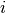
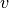

Iterators¶
This chapter introduces the image iterator, an important generic programming construct for image processing in ITK. An iterator is a generalization of the familiar C programming language pointer used to reference data in memory. ITK has a wide variety of image iterators, some of which are highly specialized to simplify common image processing tasks.
Introduction¶
Generic programming models define functionally independent components called containers and algorithms. Container objects store data and algorithms operate on data. To access data in containers, algorithms use a third class of objects called iterators. An iterator is an abstraction of a memory pointer. Every container type must define its own iterator type, but all iterators are written to provide a common interface so that algorithm code can reference data in a generic way and maintain functional independence from containers.
The iterator is so named because it is used for iterative, sequential
access of container values. Iterators appear in for and while
loop constructs, visiting each data point in turn. A C pointer, for
example, is a type of iterator. It can be moved forward (incremented)
and backward (decremented) through memory to sequentially reference
elements of an array. Many iterator implementations have an interface
similar to a C pointer.
In ITK we use iterators to write generic image processing code for images instantiated with different combinations of pixel type, pixel container type, and dimensionality. Because ITK image iterators are specifically designed to work with image containers, their interface and implementation is optimized for image processing tasks. Using the ITK iterators instead of accessing data directly through the otb::Image interface has many advantages. Code is more compact and often generalizes automatically to higher dimensions, algorithms run much faster, and iterators simplify tasks such as multithreading and neighborhood-based image processing.
Programming Interface¶
This section describes the standard ITK image iterator programming interface. Some specialized image iterators may deviate from this standard or provide additional methods.
Creating Iterators¶
All image iterators have at least one template parameter that is the image type over which they iterate. There is no restriction on the dimensionality of the image or on the pixel type of the image.
An iterator constructor requires at least two arguments, a smart pointer
to the image to iterate across, and an image region. The image region,
called the iteration region, is a rectilinear area in which iteration
is constrained. The iteration region must be wholly contained within the
image. More specifically, a valid iteration region is any subregion of
the image within the current BufferedRegion.
There is a const and a non-const version of most ITK image iterators. A non-const iterator cannot be instantiated on a non-const image pointer. Const versions of iterators may read, but may not write pixel values.
Here is a simple example that defines and constructs a simple image iterator for an otb::Image.
typedef otb::Image<float, 3> ImageType;
typedef itk::ImageRegionConstIterator<ImageType> ConstIteratorType;
typedef itk::ImageRegionIterator<ImageType> IteratorType;
ImageType::Pointer image = SomeFilter->GetOutput();
ConstIteratorType constIterator(image, image->GetRequestedRegion());
IteratorType iterator(image, image->GetRequestedRegion());
Moving Iterators¶
An iterator is described as walking its iteration region. At any time, the iterator will reference, or “point to”, one pixel location in the N-dimensional (ND) image. Forward iteration goes from the beginning of the iteration region to the end of the iteration region. Reverse iteration, goes from just past the end of the region back to the beginning. There are two corresponding starting positions for iterators, the begin position and the end position. An iterator can be moved directly to either of these two positions using:
GoToBegin()Points the iterator to the first valid data element in the region.GoToEnd()Points the iterator to one position past the last valid element in the region.
Note that the end position is not actually located within the iteration region. This is important to remember because attempting to dereference an iterator at its end position will have undefined results.
ITK iterators are moved back and forth across their iterations using the decrement and increment operators:
operator++()Increments the iterator one position in the positive direction. Only the prefix increment operator is defined for ITK image iterators.operator–()Decrements the iterator one position in the negative direction. Only the prefix decrement operator is defined for ITK image iterators.
The figure below illustrates typical iteration over an image region. Most iterators increment and decrement in the direction of the fastest increasing image dimension, wrapping to the first position in the next higher dimension at region boundaries. In other words, an iterator first moves across columns, then down rows, then from slice to slice, and so on.
Normal path of an iterator through a 2D image. The iteration region is shown in a darker shade. An arrow denotes a single iterator step, the result of one ++ operation.
In addition to sequential iteration through the image, some iterators may define random access operators. Unlike the increment operators, random access operators may not be optimized for speed and require some knowledge of the dimensionality of the image and the extent of the iteration region to use properly.
operator+=(OffsetType)Moves the iterator to the pixel position at the current index plus specified itk::Offset.operator-=(OffsetType)Moves the iterator to the pixel position at the current index minus specified Offset.SetPosition(IndexType)Moves the iterator to the given itk::Index position.
The SetPosition() method may be extremely slow for more complicated
iterator types. In general, it should only be used for setting a
starting iteration position, like you would use GoToBegin() or
GoToEnd().
Some iterators do not follow a predictable path through their iteration regions and have no fixed beginning or ending pixel locations. A conditional iterator, for example, visits pixels only if they have certain values or connectivities. Random iterators, increment and decrement to random locations and may even visit a given pixel location more than once.
An iterator can be queried to determine if it is at the end or the beginning of its iteration region.
bool IsAtEnd()True if the iterator points to one position past the end of the iteration region.bool IsAtBegin()True if the iterator points to the first position in the iteration region. The method is typically used to test for the end of reverse iteration.
An iterator can also report its current image index position.
IndexType GetIndex()Returns the Index of the image pixel that the iterator currently points to.
For efficiency, most ITK image iterators do not perform bounds checking. It is possible to move an iterator outside of its valid iteration region. Dereferencing an out-of-bounds iterator will produce undefined results.
Accessing Data¶
ITK image iterators define two basic methods for reading and writing pixel values.
PixelType Get()Returns the value of the pixel at the iterator position.void Set(PixelType)Sets the value of the pixel at the iterator position. Not defined for const versions of iterators.
The Get() and Set() methods are inlined and optimized for speed
so that their use is equivalent to dereferencing the image buffer
directly. There are a few common cases, however, where using Get()
and Set() do incur a penalty. Consider the following code, which
fetches, modifies, and then writes a value back to the same pixel
location:
it.Set(it.Get() + 1);
As written, this code requires one more memory dereference than is necessary. Some iterators define a third data access method that avoids this penalty.
PixelType & Value()Returns a reference to the pixel at the iterator position.
The Value() method can be used as either an lval or an rval in an
expression. It has all the properties of operator*. The Value()
method makes it possible to rewrite our example code more efficiently:
it.Value()++;
Consider using the Value() method instead of Get() or Set()
when a call to operator= on a pixel is non-trivial, such as when
working with vector pixels, and operations are done in-place in the
image.
Iteration Loops¶
Using the methods described in the previous sections, we can now write a simple example to do pixel-wise operations on an image. The following code calculates the squares of all values in an input image and writes them to an output image.
ConstIteratorType in(inputImage, inputImage->GetRequestedRegion());
IteratorType out(outputImage, inputImage->GetRequestedRegion());
for (in.GoToBegin(), out.GoToBegin(); !in.IsAtEnd(); ++in, ++out)
{
out.Set(in.Get() * in.Get());
}
Notice that both the input and output iterators are initialized over the
same region, the RequestedRegion of inputImage. This is good
practice because it ensures that the output iterator walks exactly the
same set of pixel indices as the input iterator, but does not require
that the output and input be the same size. The only requirement is that
the input image must contain a region (a starting index and size) that
matches the RequestedRegion of the output image.
Equivalent code can be written by iterating through the image in
reverse. The syntax is slightly more awkward because the end of the
iteration region is not a valid position and we can only test whether
the iterator is strictly equal to its beginning position. It is often
more convenient to write reverse iteration in a while loop.
in.GoToEnd();
out.GoToEnd();
while (!in.IsAtBegin())
{
--in;
--out;
out.Set(in.Get() * in.Get());
}
Image Iterators¶
This section describes iterators that walk rectilinear image regions and reference a single pixel at a time. The itk::ImageRegionIterator is the most basic ITK image iterator and the first choice for most applications. The rest of the iterators in this section are specializations of ImageRegionIterator that are designed make common image processing tasks more efficient or easier to implement.
- ImageRegionIterator: See example ImageRegionIterator.cxx
- ImageRegionIteratorWithIndex: See example ImageRegionIteratorWithIndex.cxx
- ImageLinearIteratorWithIndex: See example ImageLinearIteratorWithIndex.cxx
Neighborhood Iterators¶
In ITK, a pixel neighborhood is loosely defined as a small set of pixels that are locally adjacent to one another in an image. The size and shape of a neighborhood, as well the connectivity among pixels in a neighborhood, may vary with the application.
Many image processing algorithms are neighborhood-based, that is, the result at a pixel  is computed from the values of pixels in the ND neighborhood of . Consider finite difference operations in 2D. A derivative at pixel index , for example, is taken as a weighted difference of the values at and . Other common examples of neighborhood operations include convolution filtering and image morphology.
This section describes a class of ITK image iterators that are designed for working with pixel neighborhoods. An ITK neighborhood iterator walks an image region just like a normal image iterator, but instead of only referencing a single pixel at each step, it simultaneously points to the entire ND neighborhood of pixels. Extensions to the standard iterator interface provide read and write access to all neighborhood pixels and information such as the size, extent, and location of the neighborhood.
Neighborhood iterators use the same operators defined in Section [sec:IteratorsInterface] and the same code constructs as normal iterators for looping through an image. Figure [fig:NeighborhoodIteratorFig1] shows a neighborhood iterator moving through an iteration region. This iterator defines a neighborhood around each pixel that it visits. The center of the neighborhood iterator is always positioned over its current index and all other neighborhood pixel indices are referenced as offsets from the center index. The pixel under the center of the neighborhood iterator and all pixels under the shaded area, or extent, of the iterator can be dereferenced.
Path of a 3x3 neighborhood iterator through a 2D image region. The extent
of the neighborhood is indicated by the hashing around the iterator
position. Pixels that lie within this extent are accessible through the
iterator. An arrow denotes a single iterator step, the result of one ++
operation.
In addition to the standard image pointer and iteration region
(Section [sec:IteratorsInterface]), neighborhood iterator constructors
require an argument that specifies the extent of the neighborhood to
cover. Neighborhood extent is symmetric across its center in each axis
and is given as an array of  distances that are collectively
called the radius. Each element
distances that are collectively
called the radius. Each element  of the radius, where
and is the dimensionality of the
neighborhood, gives the extent of the neighborhood in pixels for
dimension . The length of each face of the resulting ND
hypercube is pixels, a distance of on either
side of the single pixel at the neighbor center.
Figure [fig:NeighborhoodIteratorFig2] shows the relationship between the
radius of the iterator and the size of the neighborhood for a variety of
2D iterator shapes.
of the radius, where
and is the dimensionality of the
neighborhood, gives the extent of the neighborhood in pixels for
dimension . The length of each face of the resulting ND
hypercube is pixels, a distance of on either
side of the single pixel at the neighbor center.
Figure [fig:NeighborhoodIteratorFig2] shows the relationship between the
radius of the iterator and the size of the neighborhood for a variety of
2D iterator shapes.
The radius of the neighborhood iterator is queried after construction by
calling the GetRadius() method. Some other methods provide some
useful information about the iterator and its underlying image.
Several possible 2D neighborhood iterator shapes are shown along with their radii and sizes. A neighborhood pixel can be dereferenced by its integer index (top) or its offset from the center (bottom). The center pixel of each iterator is shaded.
SizeType GetRadius()Returns the ND radius of the neighborhood as an itk::Size.const ImageType *GetImagePointer()Returns the pointer to the image referenced by the iterator.unsigned long Size()Returns the size in number of pixels of the neighborhood.
The neighborhood iterator interface extends the normal ITK iterator
interface for setting and getting pixel values. One way to dereference
pixels is to think of the neighborhood as a linear array where each
pixel has a unique integer index. The index of a pixel in the array is
determined by incrementing from the upper-left-forward corner of the
neighborhood along the fastest increasing image dimension: first column,
then row, then slice, and so on. In
Figure [fig:NeighborhoodIteratorFig2], the unique integer index is shown
at the top of each pixel. The center pixel is always at position
, where  is the size of the array.
is the size of the array.
PixelType GetPixel(const unsigned int i)Returns the value of the pixel at neighborhood positioni.void SetPixel(const unsigned int i, PixelType p)Sets the value of the pixel at positionitop.
Another way to think about a pixel location in a neighborhood is as an ND offset from the neighborhood center. The upper-left-forward corner of a neighborhood, for example, can be described by offset . The bottom-right-back corner of the same neighborhood is at offset . In Figure [fig:NeighborhoodIteratorFig2], the offset from center is shown at the bottom of each neighborhood pixel.
PixelType GetPixel(const OffsetType &o)Get the value of the pixel at the position offsetofrom the neighborhood center.void SetPixel(const OffsetType &o, PixelType p)Set the value at the position offsetofrom the neighborhood center to the valuep.
The neighborhood iterators also provide a shorthand for setting and getting the value at the center of the neighborhood.
PixelType GetCenterPixel()Gets the value at the center of the neighborhood.void SetCenterPixel(PixelType p)Sets the value at the center of the neighborhood to the valuep
There is another shorthand for setting and getting values for pixels that lie some integer distance from the neighborhood center along one of the image axes.
PixelType GetNext(unsigned int d)Get the value immediately adjacent to the neighborhood center in the positive direction along thedaxis.void SetNext(unsigned int d, PixelType p)Set the value immediately adjacent to the neighborhood center in the positive direction along thedaxis to the valuep.PixelType GetPrevious(unsigned int d)Get the value immediately adjacent to the neighborhood center in the negative direction along thedaxis.void SetPrevious(unsigned int d, PixelType p)Set the value immediately adjacent to the neighborhood center in the negative direction along thedaxis to the valuep.PixelType GetNext(unsigned int d, unsigned int s)Get the value of the pixel locatedspixels from the neighborhood center in the positive direction along thedaxis.void SetNext(unsigned int d, unsigned int s, PixelType p)Set the value of the pixel locatedspixels from the neighborhood center in the positive direction along thedaxis to valuep.PixelType GetPrevious(unsigned int d, unsigned int s)Get the value of the pixel locatedspixels from the neighborhood center in the positive direction along thedaxis.void SetPrevious(unsigned int d, unsigned int s, PixelType p)Set the value of the pixel locatedspixels from the neighborhood center in the positive direction along thedaxis to valuep.
It is also possible to extract or set all of the neighborhood values from an iterator at once using a regular ITK neighborhood object. This may be useful in algorithms that perform a particularly large number of calculations in the neighborhood and would otherwise require multiple dereferences of the same pixels.
NeighborhoodType GetNeighborhood()Return a itk::Neighborhood of the same size and shape as the neighborhood iterator and contains all of the values at the iterator position.void SetNeighborhood(NeighborhoodType &N)Set all of the values in the neighborhood at the iterator position to those contained in NeighborhoodN, which must be the same size and shape as the iterator.
Several methods are defined to provide information about the neighborhood.
IndexType GetIndex()Return the image index of the center pixel of the neighborhood iterator.IndexType GetIndex(OffsetType o)Return the image index of the pixel at offsetofrom the neighborhood center.IndexType GetIndex(unsigned int i)Return the image index of the pixel at array positioni.OffsetType GetOffset(unsigned int i)Return the offset from the neighborhood center of the pixel at array positioni.unsigned long GetNeighborhoodIndex(OffsetType o)Return the array position of the pixel at offsetofrom the neighborhood center.std::slice GetSlice(unsigned int n)Return astd::slicethrough the iterator neighborhood along axisn.
A neighborhood-based calculation in a neighborhood close to an image boundary may require data that falls outside the boundary. The iterator in Figure [fig:NeighborhoodIteratorFig1], for example, is centered on a boundary pixel such that three of its neighbors actually do not exist in the image. When the extent of a neighborhood falls outside the image, pixel values for missing neighbors are supplied according to a rule, usually chosen to satisfy the numerical requirements of the algorithm. A rule for supplying out-of-bounds values is called a boundary condition.
ITK neighborhood iterators automatically detect out-of-bounds dereferences and will return values according to boundary conditions. The boundary condition type is specified by the second, optional template parameter of the iterator. By default, neighborhood iterators use a Neumann condition where the first derivative across the boundary is zero. The Neumann rule simply returns the closest in-bounds pixel value to the requested out-of-bounds location. Several other common boundary conditions can be found in the ITK toolkit. They include a periodic condition that returns the pixel value from the opposite side of the data set, and is useful when working with periodic data such as Fourier transforms, and a constant value condition that returns a set value  for all out-of-bounds pixel dereferences. The constant value condition is equivalent to padding the image with value .
Bounds checking is a computationally expensive operation because it occurs each time the iterator is incremented. To increase efficiency, a neighborhood iterator automatically disables bounds checking when it detects that it is not necessary. A user may also explicitly disable or enable bounds checking. Most neighborhood based algorithms can minimize the need for bounds checking through clever definition of iteration regions. These techniques are explored in Section [sec:NeighborhoodExample3].
void NeedToUseBoundaryConditionOn()Explicitly turn bounds checking on. This method should be used with caution because unnecessarily enabling bounds checking may result in a significant performance decrease. In general you should allow the iterator to automatically determine this setting.void NeedToUseBoundaryConditionOff()Explicitly disable bounds checking. This method should be used with caution because disabling bounds checking when it is needed will result in out-of-bounds reads and undefined results.void OverrideBoundaryCondition(BoundaryConditionType *b)Overrides the templated boundary condition, using boundary condition objectbinstead. Objectbshould not be deleted until it has been released by the iterator. This method can be used to change iterator behavior at run-time.void ResetBoundaryCondition()Discontinues the use of any run-time specified boundary condition and returns to using the condition specified in the template argument.void SetPixel(unsigned int i, PixelType p, bool status)Sets the value at neighborhood array positionito valuep. If the positioniis out-of-bounds,statusis set tofalse, otherwisestatusis set totrue.
The following sections describe the two ITK neighborhood iterator classes, itk::NeighborhoodIterator and itk::ShapedNeighborhoodIterator. Each has a const and a non-const version. The shaped iterator is a refinement of the standard NeighborhoodIterator that supports an arbitrarily-shaped (non-rectilinear) neighborhood.
NeighborhoodIterator¶
The standard neighborhood iterator class in ITK is the
itk::NeighborhoodIterator. Together with its const
version, itk::ConstNeighborhoodIterator, it implements the
complete API described above. This section provides several examples to
illustrate the use of NeighborhoodIterator.
- Basic neighborhood techniques: edge detection. See example NeighborhoodIterators1.cxx
- Convolution filtering: Sobel operator. See example NeighborhoodIterators2.cxx
- Optimizing iteration speed. See example NeighborhoodIterators3.cxx
- Separable convolution: Gaussian filtering. See example NeighborhoodIterators4.cxx
- Random access iteration: See example NeighborhoodIterators6.cxx
ShapedNeighborhoodIterator¶
This section describes a variation on the neighborhood iterator called a shaped neighborhood iterator. A shaped neighborhood is defined like a bit mask, or stencil, with different offsets in the rectilinear neighborhood of the normal neighborhood iterator turned off or on to create a pattern. Inactive positions (those not in the stencil) are not updated during iteration and their values cannot be read or written. The shaped iterator is implemented in the class itk::ShapedNeighborhoodIterator, which is a subclass of itk::NeighborhoodIterator. A const version, itk::ConstShapedNeighborhoodIterator, is also available.
Like a regular neighborhood iterator, a shaped neighborhood iterator must be initialized with an ND radius object, but the radius of the neighborhood of a shaped iterator only defines the set of possible neighbors. Any number of possible neighbors can then be activated or deactivated. The shaped neighborhood iterator defines an API for activating neighbors. When a neighbor location, defined relative to the center of the neighborhood, is activated, it is placed on the active list and is then part of the stencil. An iterator can be “reshaped” at any time by adding or removing offsets from the active list.
void ActivateOffset(OffsetType &o)Include the offsetoin the stencil of active neighborhood positions. Offsets are relative to the neighborhood center.void DeactivateOffset(OffsetType &o)Remove the offsetofrom the stencil of active neighborhood positions. Offsets are relative to the neighborhood center.void ClearActiveList()Deactivate all positions in the iterator stencil by clearing the active list.unsigned int GetActiveIndexListSize()Return the number of pixel locations that are currently active in the shaped iterator stencil.
Because the neighborhood is less rigidly defined in the shaped iterator,
the set of pixel access methods is restricted. Only the GetPixel()
and SetPixel() methods are available, and calling these methods on
an inactive neighborhood offset will return undefined results.
For the common case of traversing all pixel offsets in a neighborhood,
the shaped iterator class provides an iterator through the active
offsets in its stencil. This stencil iterator can be incremented or
decremented and defines Get() and Set() for reading and writing
the values in the neighborhood.
ShapedNeighborhoodIterator::Iterator Begin()Return a const or non-const iterator through the shaped iterator stencil that points to the first valid location in the stencil.ShapedNeighborhoodIterator::Iterator End()Return a const or non-const iterator through the shaped iterator stencil that points one position past the last valid location in the stencil.
The functionality and interface of the shaped neighborhood iterator is best described by example. We will use the ShapedNeighborhoodIterator to implement some binary image morphology algorithms. The examples that follow implement erosion and dilation.
For shaped neighborhoods morphological operations, see also examples ShapedNeighborhoodIterators1.cxx and ShapedNeighborhoodIterators2.cxx.